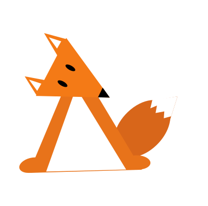
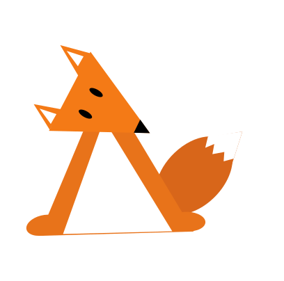
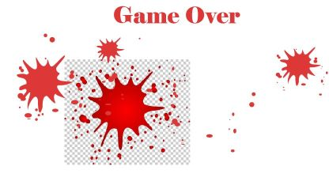
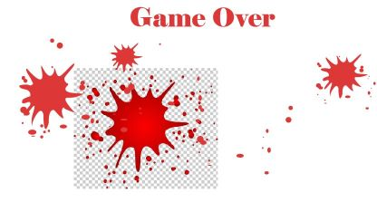

Tema 4
Grundlæggende Animation

Klik her for at se websitet

Beskrivelse
I tema 4, “Grundlæggende Animation" blev vi ordentligt introduceret til programmeringssproget Javascript. Vi fik blandt andet kendskab til begreber som variabler og funktioner, som vi skulle benytte os af i vores click-spil. Derudover anvendte vi kræfter indenfor animation i CSS, hvor vi i høj grad benyttede os af egenskaberne (properties) “position” og “transform”. Derudover blev vi også introduceret til programmer som Audition og Illustrator fra Adobe-pakken. Adobe Illustrator gav os mulighed for at designe og skabe vores egen UI-elementer til spillet. Mens Adobe Audition gav os mulighed for at kunne lave lydeffekter til spillet. Vi lærte også en del teori, som vi skulle tage med os, da vi skulle designe vores UI-elementer, blandt andet "Atmosfæriske Perspektiv" og principper indenfor karakterdesign som “Line of action" og “Bouba/Kiki effect”. Derudover fik vi også stiftet erfaring med “UML Aktivitetsdiagram”, der gav et et grafisk og overskueligt overblik over spillets forløb og vision.
Procesdokumentation
Jeg indledte processen med at generere ideer til et potentiel spilkoncept. I første omgang overvejede jeg at udvikle et spil, hvor spilleren skulle indsamle affald fra havet, altså en aktivitet, der objektivt set bidrager positivt. Dog bemærkede jeg under gennemgangen af lærernes eksempler, at et spil med dette koncept allerede var blevet lavet tidligere. Dette virkede smule demotiverende, så jeg valgte at udforske andre ideer. Jeg begyndte at brainstorme om objektive negative handlinger som f.eks. at stjæle eller dræbe. Resultatet af min idéudvikling blev et koncept, hvor spilleren stod over for jagere som modstandere, og hvor spillerens mål var at agere som beskytter af skovens dyr.Herefter påbegyndte jeg arbejdet med mine skitser til hvert UI-element. Jeg integrerede teorier som "line of action" og "Bouba/kiki" i mine overvejelser samt anvendte farveteori. Desuden viste sig Gradient Tool i Adobe Illustrator at være nyttigt til at skabe “Atmosfærisk Perspektiv”


 



 



Reflektioner
Jeg synes,at tema 4 har været et af de mere spændende temaer, som vi har haft her på multimediedesigneruddannelsen. Jeg synes, at teamet formåede at introducere blandt andet Javascript og Illustrator på en utrolig sjov og medrivende måde. Jeg har fået gode egenskaber med fra dette tema, som jeg uden tvivl vil fortsætte med at bruge, selv udenfor undervisningen. Dog må jeg indrømme, at jeg ikke føler, at jeg prioriterede website-delen nok i dette tema. Jeg føler ikke, at jeg nåede ordentligt i mål med resten af websitetet, udover spillet, hvilket kan ses, så det ærgrer mig en smule.